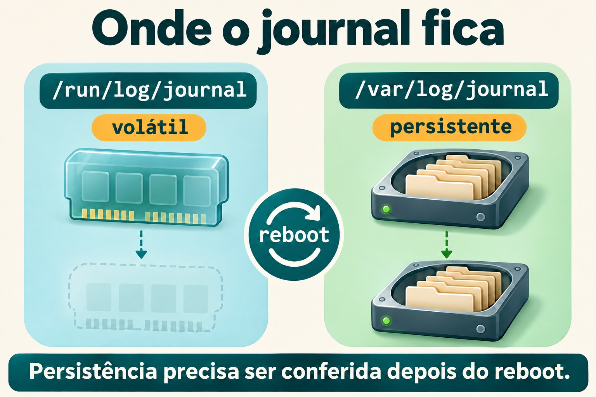
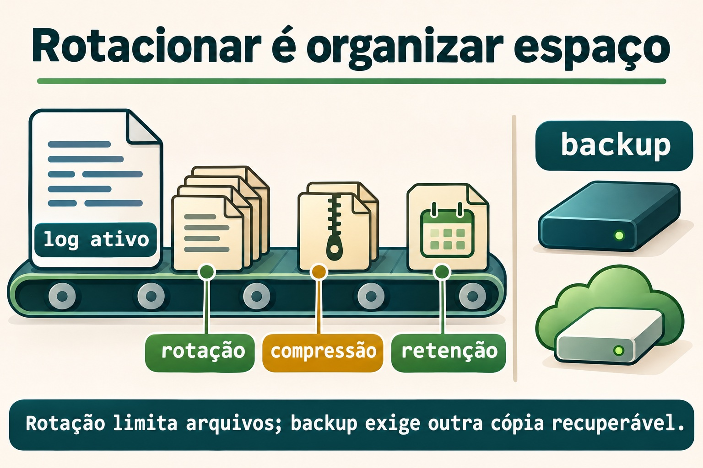

Aula 14.3 · journald e rsyslog
O trabalho agendado falhou e deixou uma mensagem. Agora você precisa encontrá-la, saber se sobreviverá ao reboot e controlar o crescimento do arquivo de texto. Journal, encaminhamento e rotação têm funções distintas. Você vai conferir cada uma sem apagar registros reais.
Núcleo desta aula: procure o evento na fonte certa, confirme persistência e teste a rotação somente no arquivo próprio. O resto é aprofundamento.
| Ficha | |
|---|---|
| Módulo | M14 · Agendamento, logs e hora, aula 3 de 5 |
| Quando | Semana 20 |
| Ao final | Você filtra eventos, comprova journal persistente e gira um log próprio com estado separado |
| Pré-requisitos | Aula 14.2, sudo, SSH e snapshots nas VMs do curso |
| Tempo | Cerca de 90 minutos |
| Snapshots | m14a3-inicio e m14a3-fim nas VMs 201 e 202 |
1 · Aquecimento
Responda antes de procurar os arquivos.
- Onde o serviço oneshot deixou seu resultado na 14.2?
- Qual diferença existe entre processo ativo e tarefa concluída com sucesso?
- Por que um arquivo grande não deve ser apagado sem identificar seu produtor?
2 · Por que importa
Um incidente aconteceu antes do reboot, mas você só procura com journalctl -b. Esse filtro mostra o boot atual. Em outra máquina, o journal era volátil e os dados antigos realmente não existem mais. A mesma tela vazia pode ter causas diferentes.
Outro chamado fala de disco cheio. Apagar um arquivo aberto não garante liberar seu espaço. Primeiro descubra quem escreve; depois aplique a rotação correta, com reabertura pelo produtor.
3 · Modelo mental
O journal é um arquivo de registros estruturados da portaria. rsyslog pode receber mensagens e distribuí-las em arquivos de texto. logrotate organiza os volumes desses arquivos, mas não produz uma cópia externa de recuperação.
evento -> journald -> journal
entrada rsyslog -> arquivo -> logrotate
Ponte Windows
| Conceito | Linux |
|---|---|
| Visualizador e filtros de eventos | journalctl |
| Origem de um evento | Unit, identificador e campos do journal |
| Arquivo textual de aplicação | Saída própria ou ação rsyslog |
| Política de tamanho e retenção | Configuração do armazenamento e logrotate |
4 · O essencial
Filtros são parte da pergunta
-b seleciona o boot, -u a unit, -t o identificador e -p a prioridade. Um filtro de prioridade inclui as mais graves até o nível escolhido; não significa apenas aquele nível.
sudo journalctl --list-boots
sudo journalctl -b -p warning --no-pager
sudo journalctl -t m14a3 --since '-10 minutes' --no-pagerUma consulta vazia comprova somente que nenhum registro visível correspondeu aos filtros naquele armazenamento. Confira intervalo, boot, prioridade e acesso antes de concluir que o evento não existiu.
Persistência
Em armazenamento volátil, o journal usa /run/log/journal. Com persistência, usa /var/log/journal. Storage=auto depende da existência da estrutura persistente; Storage=persistent solicita esse armazenamento explicitamente.


rsyslog e seu produtor
Uma regra de saída só atua sobre mensagens que chegaram ao rsyslog. Confira a entrada configurada. Não carregue outra cópia de um módulo de entrada só porque um arquivo de saída ficou vazio.
Rotação e reabertura
Renomear o arquivo ativo não muda automaticamente o descritor aberto pelo produtor. O procedimento precisa criar o novo arquivo e fazer o produtor reabri-lo. O lab usa uma regra própria, retenção curta e estado separado para não forçar a rotação dos logs reais.


Rocky × Debian
| Item | Rocky 9 | Debian 13 |
|---|---|---|
| Journal | systemd-journald | systemd-journald |
| rsyslog | Pode já estar instalado | Pode não estar instalado |
| Logs de texto comuns | /var/log/messages, /var/log/secure | Dependem do rsyslog e das regras instaladas |
| Rotação | Confira a agenda instalada | Confira a agenda instalada |
5 · Lab guiado
Nesta aula a persistência do journal será mantida como configuração final do laboratório. Os registros antigos não serão apagados. A limpeza retira somente o encaminhamento e a rotação dos arquivos de exercício.
Passo 1 · Proteger e inventariar
Palpite: uma instalação Debian sem syslog textual está necessariamente sem registros?
No host Proxmox:
qm snapshot 201 m14a3-inicio
qm snapshot 202 m14a3-inicioNas duas VMs, confirme os caminhos ausentes e guarde a configuração efetiva antes de alterar.
test ! -e "$HOME/m14a3"
mkdir -m 700 "$HOME/m14a3"
systemd-analyze cat-config systemd/journald.conf > "$HOME/m14a3/journald.inicio"
sudo test ! -e /etc/systemd/journald.conf.d/60-m14a3.conf
sudo test ! -e /etc/rsyslog.d/30-m14a3.conf
sudo test ! -e /etc/logrotate.d/m14a3
sudo test ! -e /var/log/m14a3
sudo test ! -e /var/lib/logrotate/m14a3.status
sudo journalctl --disk-usageSaída esperada: caminhos de exercício livres e inventário real do armazenamento.
Verifique: preserve arquivos e regras existentes; se houver configuração posterior que substitua a opção nova, investigue a precedência em vez de sobrescrevê-la.
Passo 2 · Marcar e filtrar eventos
Palpite: um evento informativo aparece em uma consulta que pede warning e mais graves?
logger -t m14a3 -p user.info 'M14A3 informational event'
logger -t m14a3 -p user.warning 'M14A3 warning event'
sudo journalctl -b -t m14a3 --since '-5 minutes' --no-pager
sudo journalctl -b -t m14a3 -p warning --since '-5 minutes' --no-pagerSaída esperada: a primeira consulta mostra os dois eventos; a segunda seleciona o warning, além de qualquer evento mais grave com o mesmo identificador.
Verifique: confira o texto e o horário reais. Não use o identificador de outro serviço para simular evidência.
Passo 3 · Tornar o journal persistente
Palpite: salvar a opção já comprova que o evento sobreviverá ao boot?
sudo install -d /etc/systemd/journald.conf.d
sudo tee /etc/systemd/journald.conf.d/60-m14a3.conf > /dev/null <<'EOF'
[Journal]
Storage=persistent
EOF
sudo mkdir -p /var/log/journal
sudo systemd-tmpfiles --create --prefix /var/log/journal
sudo systemctl restart systemd-journald
sudo journalctl --flush
systemd-analyze cat-config systemd/journald.conf
logger -t m14a3 'M14A3 before reboot'
sudo systemctl rebootDepois de reconectar:
sudo journalctl --list-boots
sudo journalctl -b -1 -t m14a3 --no-pagerSaída esperada: a mensagem anterior aparece no boot anterior. A opção final efetiva precisa ser persistente.
Verifique: não apague diretórios de journal para testar ou limpar. Os dados reais pertencem à história do host.
Decida 1
| Opção | A busca do boot atual ficou vazia |
|---|---|
| A | Apagar o journal e repetir |
| B | Concluir que o evento nunca existiu |
| C | Conferir boot, intervalo, prioridade e acesso |
Escolha C. A consulta pode ter excluído o próprio evento.
Passo 4 · Criar uma saída textual própria
Palpite: uma regra de saída atua sobre eventos que não chegaram ao rsyslog?
Na Rocky instale sudo dnf install -y rsyslog logrotate; na Debian, sudo apt install -y rsyslog logrotate. Mantenha o rsyslog padrão do lab como proprietário da coleta textual, sem outro coletor concorrente.
sudo systemctl enable --now rsyslog
ps -o user= -C rsyslogdAnote o usuário real do processo e defina as variáveis abaixo com esse valor, sem presumir que se chame syslog.
read -r -p 'rsyslog process user: ' LOGUSER
id "$LOGUSER"
LOGGROUP=$(id -gn "$LOGUSER")
sudo install -d -m 755 -o "$LOGUSER" -g "$LOGGROUP" /var/log/m14a3
sudo install -m 640 -o "$LOGUSER" -g "$LOGGROUP" /dev/null /var/log/m14a3/events.log
sudo tee /etc/rsyslog.d/30-m14a3.conf > /dev/null <<'EOF'
if $programname == 'm14a3' then {
action(type="omfile" file="/var/log/m14a3/events.log")
}
EOF
sudo rsyslogd -N1
sudo systemctl restart rsyslog
logger -t m14a3 'M14A3 text route'
sudo tail /var/log/m14a3/events.logNa Rocky, confirme os contextos com sudo restorecon -R /var/log/m14a3 antes de testar a escrita.
Saída esperada: a validação passa e a mensagem chega ao arquivo. Os outros destinos existentes não foram interrompidos com uma regra de parada.
Verifique: se a mensagem existir no journal, mas não no texto, confira a entrada rsyslog instalada e suas mensagens de erro. Não invente entrega nem duplique módulos de entrada.
Passo 5 · Girar só o arquivo de exercício
Palpite: depois da renomeação, quem precisa reabrir o nome ativo?
Mantenha LOGUSER e LOGGROUP definidos para o processo verificado.
sudo tee /etc/logrotate.d/m14a3 > /dev/null <<EOF
/var/log/m14a3/events.log {
size 1
rotate 2
missingok
notifempty
compress
delaycompress
create 0640 $LOGUSER $LOGGROUP
sharedscripts
postrotate
/usr/bin/systemctl kill -s HUP rsyslog.service
endscript
}
EOF
sudo logrotate -d -s /var/lib/logrotate/m14a3.status /etc/logrotate.d/m14a3
sudo logrotate -f -s /var/lib/logrotate/m14a3.status /etc/logrotate.d/m14a3
logger -t m14a3 'M14A3 after rotation'
sudo ls -l /var/log/m14a3
sudo tail /var/log/m14a3/events.logSaída esperada: arquivo antigo vira .1, um novo ativo recebe a mensagem e a compressão fica adiada para permitir a observação. A regra rotaciona apenas esse arquivo.
Verifique: estado separado e argumento de arquivo único evitam forçar regras dos outros serviços.
Decida 2
| Opção | Conferir rotação no laboratório |
|---|---|
| A | Usar regra própria e arquivo de estado separado |
| B | Apagar o arquivo ativo |
| C | Forçar toda a configuração global |
Escolha A. O exercício não deve alterar a retenção dos outros logs.
Passo 6 · Conferir a coleta após reboot
Palpite: um arquivo preservado comprova que o coletor voltou?
sudo systemctl rebootDepois de reconectar:
systemctl is-active rsyslog
logger -t m14a3 'M14A3 current boot'
sudo journalctl -b -t m14a3 --no-pager
sudo tail /var/log/m14a3/events.logSaída esperada: novo evento no boot atual e no arquivo textual pela rota configurada.
Verifique: diferencie conteúdo antigo preservado de mensagem realmente nova.
6 · Quebre e conserte
Quebra 1 · Filtro que exclui a mensagem
Sintoma: a mensagem informativa não aparece na busca de warning.
Investigação: envie um evento informativo e compare consultas com e sem prioridade.
logger -t m14a3 -p user.info 'M14A3 filter test'
sudo journalctl -b -t m14a3 -p warning --since '-2 minutes' --no-pager
sudo journalctl -b -t m14a3 --since '-2 minutes' --no-pagerCausa: a seleção excluiu o nível informativo.
Conserto: use o filtro correspondente à pergunta, sem modificar o armazenamento.
Verifique: a segunda consulta mostra o evento.
Prevenção: anote os filtros junto da conclusão.
Quebra 2 · Identificador diferente
Sintoma: o evento chega ao journal, mas não à regra de arquivo própria.
Investigação: envie com um identificador diferente do filtro.
logger -t m14a3-other 'M14A3 different tag'
sudo journalctl -b -t m14a3-other --no-pager
sudo tail /var/log/m14a3/events.logCausa: a regra aceita m14a3, não m14a3-other.
Conserto: envie o identificador pretendido, em vez de ampliar o filtro para tudo.
Verifique: logger -t m14a3 'M14A3 corrected tag' volta ao destino próprio.
Prevenção: confira os campos usados pela regra, não só o texto da mensagem.
Quebra 3 · Arquivo antigo ainda aberto
Sintoma: depois de girar sem reabertura, a mensagem segue para o arquivo renomeado.
Investigação: retire só o comando de reabertura da regra própria e force uma rotação desse arquivo.
sudo cp -a /etc/logrotate.d/m14a3 "$HOME/m14a3/logrotate.good"
sudo sed -i '\@/usr/bin/systemctl kill -s HUP rsyslog.service@d' /etc/logrotate.d/m14a3
sudo logrotate -f -s /var/lib/logrotate/m14a3.status /etc/logrotate.d/m14a3
logger -t m14a3 'M14A3 old descriptor'
sudo tail /var/log/m14a3/events.log.1Causa: o produtor manteve o descritor anterior aberto.
Conserto: restaure a regra própria e peça reabertura.
sudo cp -a "$HOME/m14a3/logrotate.good" /etc/logrotate.d/m14a3
sudo systemctl kill -s HUP rsyslog.service
logger -t m14a3 'M14A3 reopened'Verifique: a última mensagem entra no nome ativo.
Prevenção: inclua a reabertura apropriada ao produtor no procedimento de rotação.
Limpeza
Guarde o resultado e retire somente as regras e arquivos de exercício. A persistência do journal permanece intencionalmente configurada.
sudo journalctl -t m14a3 --no-pager > "$HOME/m14a3/journal.txt"
sudo rm -f /etc/rsyslog.d/30-m14a3.conf /etc/logrotate.d/m14a3
sudo rsyslogd -N1
sudo systemctl restart rsyslog
sudo rm -f /var/log/m14a3/events.log /var/log/m14a3/events.log.1 /var/log/m14a3/events.log.2.gz /var/lib/logrotate/m14a3.status
sudo rmdir /var/log/m14a3Se decidir reverter a opção de armazenamento, remova apenas /etc/systemd/journald.conf.d/60-m14a3.conf e reinicie journald. Preserve os dados: com Storage=auto, o diretório existente ainda pode manter persistência. Não apague journals para obter um estado visualmente vazio.
7 · Armadilhas
| Erro | Faça | Motivo |
|---|---|---|
| Consulta vazia significa ausência de evento | Rever filtros e armazenamento | A pergunta pode excluir o registro |
| Todo journal fica em texto | Identificar o armazenamento | Journal é estruturado |
| Rotação é backup | Testar cópia recuperável separada | Retenção local não protege contra perda do host |
8 · Quiz
- O que seleciona
-b -1? - O filtro warning inclui níveis mais graves?
- Como comprovar persistência?
- Por que a regra rsyslog pode não receber um evento?
- Por que reabrir depois de girar?
- Por que usar estado separado no teste de logrotate?
9 · Cola
| Tarefa | Comando |
|---|---|
| Listar boots | sudo journalctl --list-boots |
| Eventos próprios | sudo journalctl -t m14a3 |
| Validar rsyslog | sudo rsyslogd -N1 |
| Simular rotação | sudo logrotate -d /etc/logrotate.d/m14a3 |
Flashcards: crie cinco cartões sobre boot, prioridade, persistência, entrada e reabertura. Revise em D+1, D+3, D+7 e D+21.
10 · Checklist e fechamento
- [ ] Encontrei eventos com filtros explicados.
- [ ] Comprovei persistência após reboot.
- [ ] Girei apenas o arquivo próprio e preservei os journals reais.
Último exercício: descreva como distinguir evento inexistente, filtro incorreto e armazenamento volátil.
Reboot de conferência: reinicie as duas VMs após a limpeza; confirme journal persistente e ausência da regra textual de exercício.
sudo systemctl rebootNo host Proxmox:
qm snapshot 201 m14a3-fim
qm snapshot 202 m14a3-fim11 · Na vida real
Em host autorizado, leia a configuração do journal, seu uso de disco e as regras de um log conhecido. Não force rotação, não reinicie coleta e não apague dados nesta missão. Informe quem produz, onde guarda e como o produtor reabre o arquivo.
12 · Aprofundar quando quiser
- journald.conf(5) e journalctl(1): armazenamento e consulta.
- Filtros rsyslog e logrotate(8): seleção e rotação.
DeepTutor (http://10.1.0.149:3782, KB "Curso Linux Sysadmin"):
!explica Separe armazenamento do journal, encaminhamento rsyslog e rotação de arquivos.!feynman Vou explicar por que uma consulta vazia não comprova ausência do evento. Critique minha explicação.!quiz Crie seis incidentes de logs sem apagar registros reais.
Gabarito comentado
Aquecimento
- No journal da unit, além do estado produzido pelo trabalho.
- Um processo pode estar ativo sem ter cumprido a tarefa; um oneshot pode concluir e ficar inativo.
- O produtor pode manter o arquivo aberto e continuar ocupando espaço.
Quiz
- O boot anterior disponível no armazenamento.
- Sim; seleciona warning e mais graves.
- Grave uma mensagem antes, reinicie e consulte o boot anterior.
- Entrada ausente, filtro diferente ou erro de ação, entre outras evidências a investigar.
- O descritor pode continuar apontando ao arquivo renomeado.
- Para não alterar o histórico de rotação dos outros logs.
← Aula 14.2 · Timers do systemd · Índice de aulas · Plano do curso: 14.4 em diante →